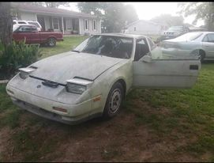
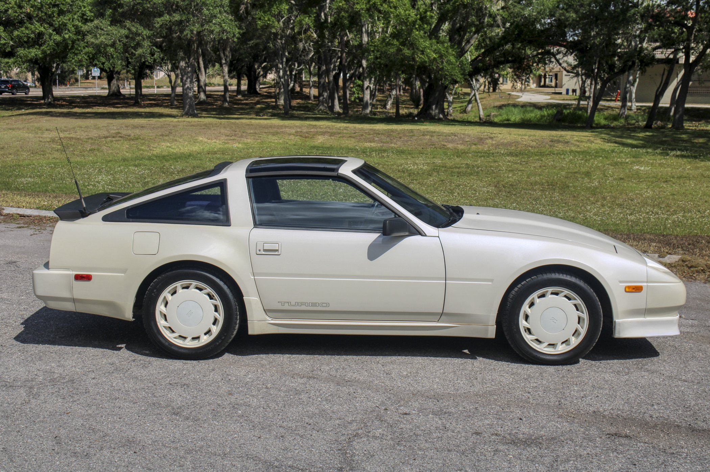
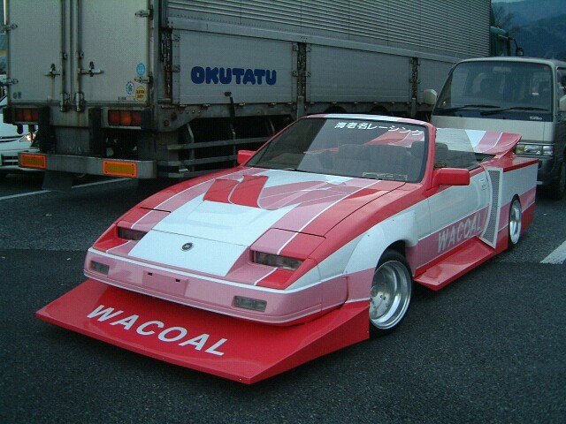
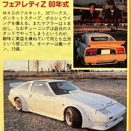

1988 Nissan 300ZX (Z31)
Nissan's Z-Car, an 80's daydream pumping 200HP through 4 wheels like nothing you've ever seen before. A luxurious, powerful GT car that forever changed the Z car.
Almost 2 years ago, I found this 2+2 300ZX left to die in a barn in alabama. It had sat for 11 years, baking in the sun.
This car caused the avalanche of my JDM car passion, as I got to bring this back to life. I'm extremely proud of it!
This is my Z as of it's last drive!

Right now, my 2+2 has a full restoration in the works. I've got half of the engine redone so far, and i'll be refreshing the resh of the driveline following it. I want this car to feel as if I've just bought it in 1988!
For anyone interested, it's an N/A VG30e that's going to hopefully make around 300 Horses, all I plan to do is tune the Ecu. My goal is true OEM+ :)

This is how I'd like mine to look!
Here's the story of my first big job!
It started in the fall, near november of the first year I'd had my Z. It sat on my hill, waiting for life to find it again. After months of searching, I'd made a friend who shipped me a new gas tank for it! (These are EXTREMELY HARD to find on Z31's clean.) All I'd known from day one, was that it'd had a bad gas tank, and sat for 11 years. So, I awkwardly grabbed a handful of tools, and made myself dive directly into my first Major repair! I was super scared of causing issues, and that anxiety had made me wait a long time, but I quickly realised that cars really aren't that hard. Time started to pass, and I realized that wrenching on the Z was the most tranquil experience I'd had in a LONG time. I remember how cold my hands were, 11:30 and I'd still been laying in the autumn dirt. I finally had the tank in place! Unfortunately, it's never that easy. The Z sat for a few more months, until we tapped the injectors, and it suddenly decided it wanted to live again! My memories of bringing it to life are some of my fondest.
Bosuzoku culture rocks, and I'd love to style this car to be a more rowdy machine. >:)
I've recently bought a second Z31, and I'm planning to make it a very fun and aggressive car. Eventually, I want to style it like a bosuzoku car, with a ridiculous exhaust and slammed to the ground, wearing an awesome wing.
 